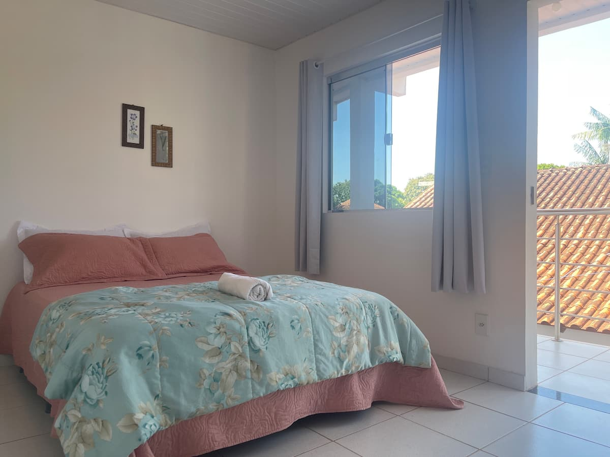
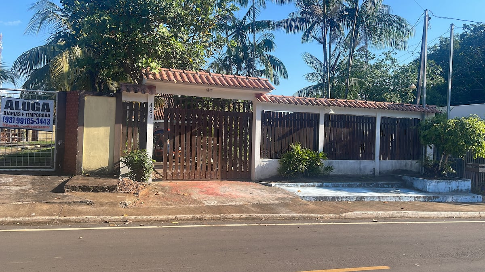
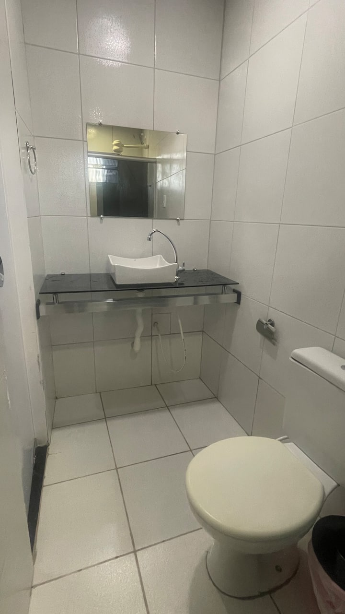
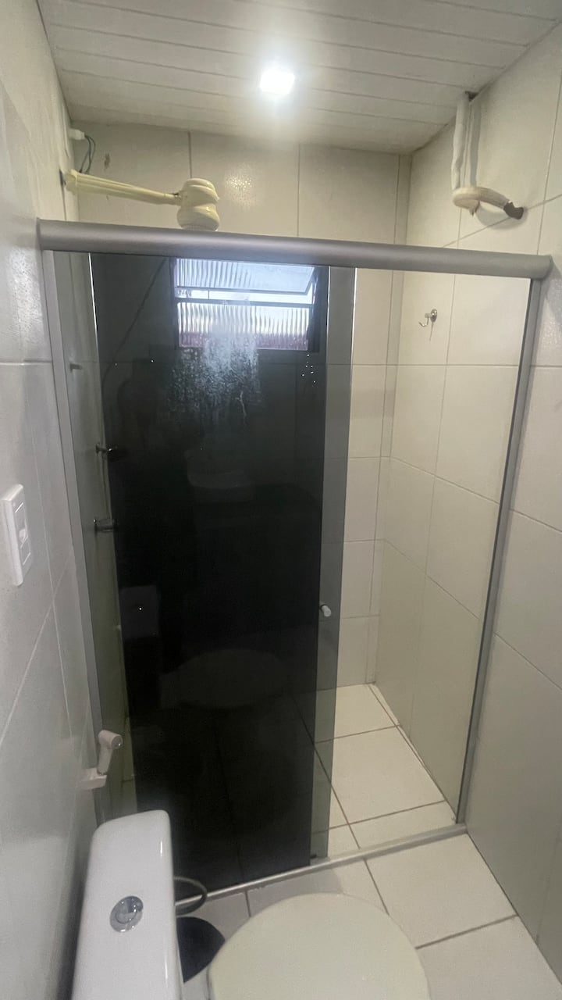
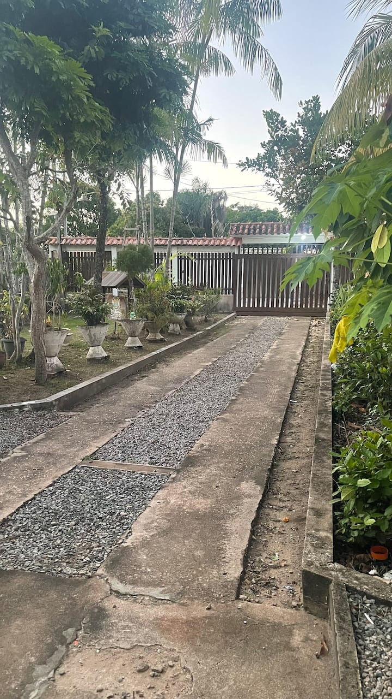
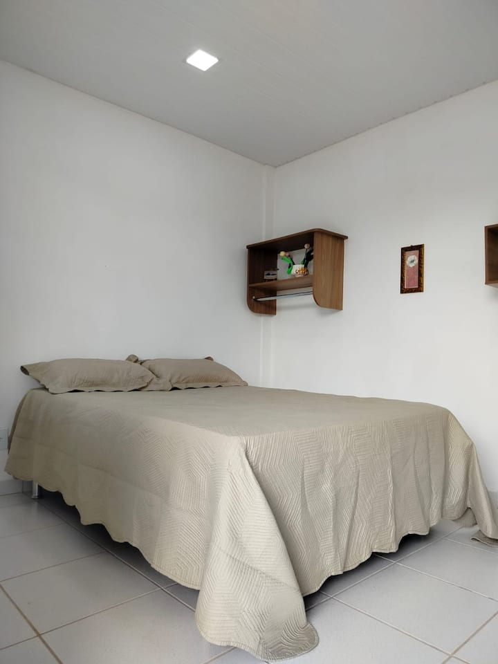
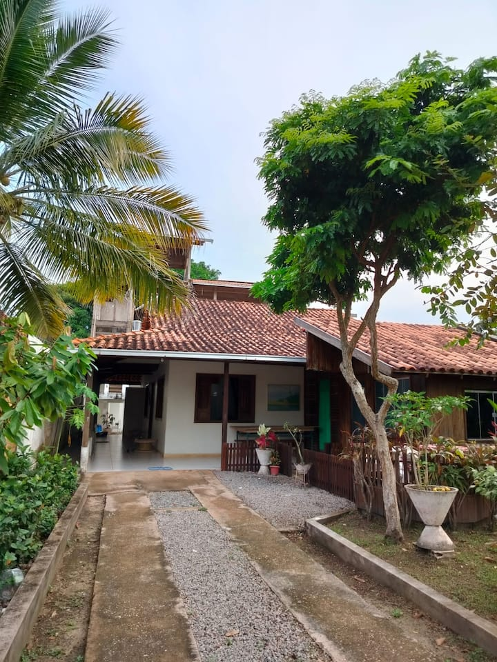

Pousada Tendawa
Escondida no coração de Alter do Chão, a Pousada Tendawa é um espaço calmo e moderno, pensado para quem busca conforto, localização e a verdadeira vibe amazônica — sem barulho.








Por que importa: Alter do Chão abriga algumas das praias de água doce mais bonitas do mundo.
Por que se hospedar na Tendawa
- Localização central
- Quartos silenciosos e climatizados
- Wi-Fi rápido
- Estacionamento gratuito
- Anfitriões atenciosos
Localização
📍 Ver no Google Maps | 🛌 Booking.com | 🏡 Airbnb 📱 WhatsApp | 📸 Instagram |